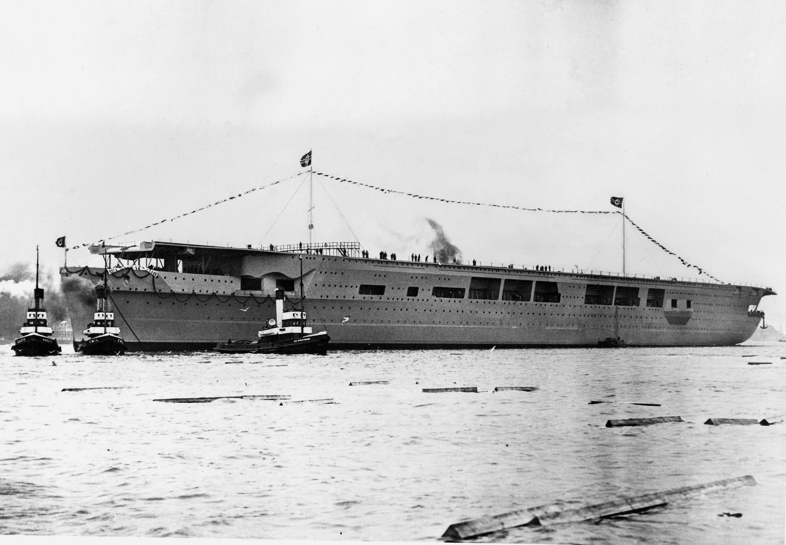

In deze maand, Oktober, tijdens de oorlog:

Graf Zeppelin was een vliegdekschip van de Kriegsmarine, net als het beroemde luchtschip genoemd naar Graf Ferdinand von Zeppelin. Het was Duitslands enige vliegdekschip gedurende de Tweede Wereldoorlog. De opdracht voor de bouw werd gegeven op 16 november 1935 en de kiellegging was op 28 december 1936 bij Deutsche Werke in Kiel. Het werd te water gelaten op 8 december 1938, maar werd nooit voltooid, nooit in dienst gesteld en heeft nooit deelgenomen aan de oorlog. (Wikipedia)